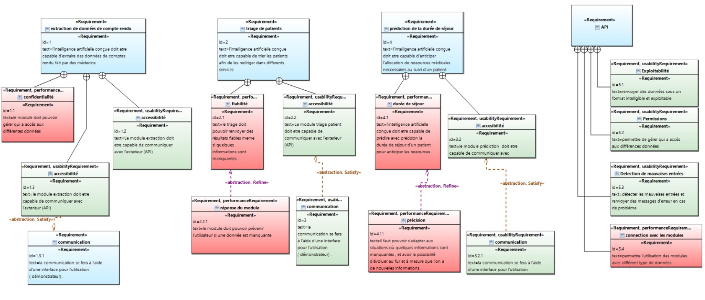
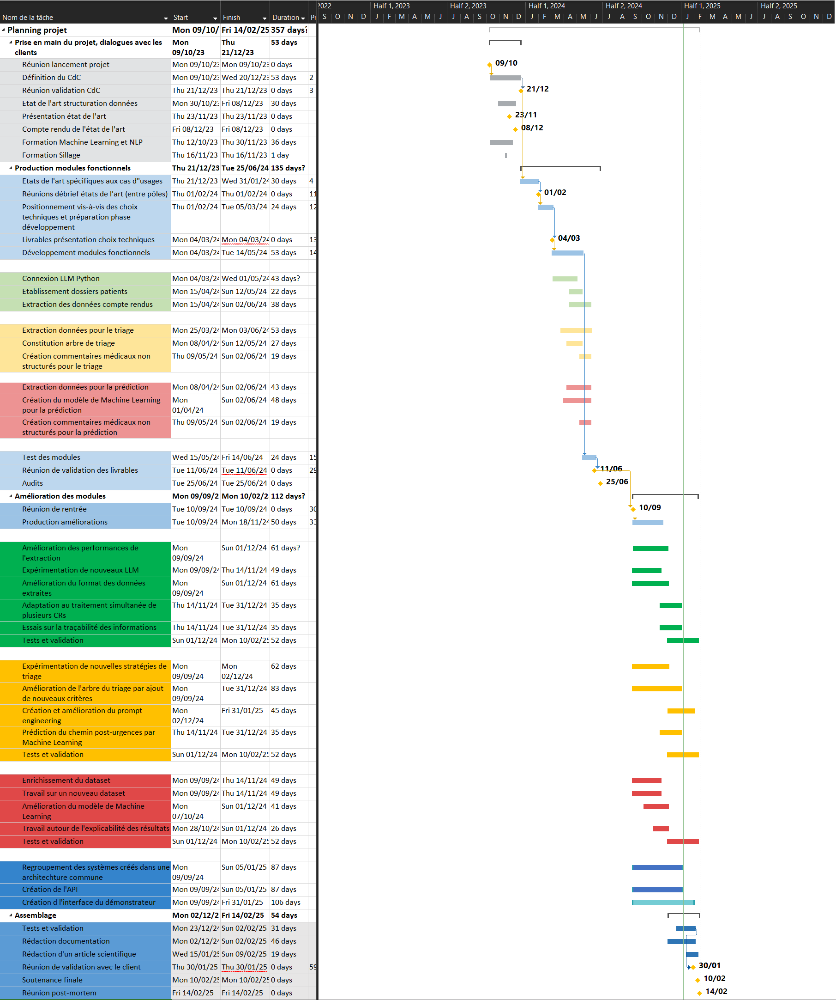
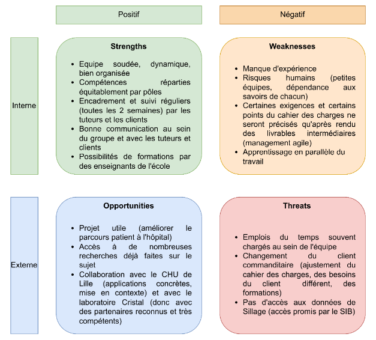
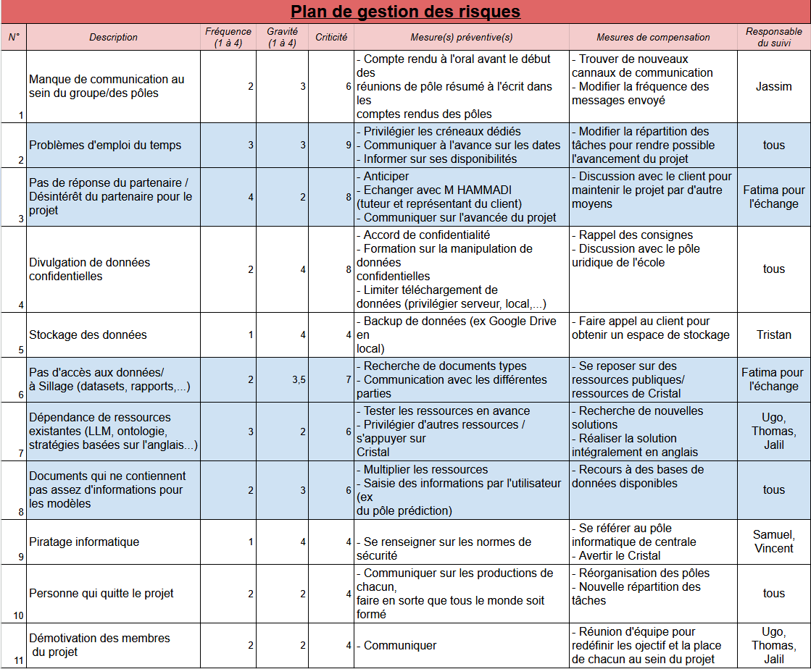
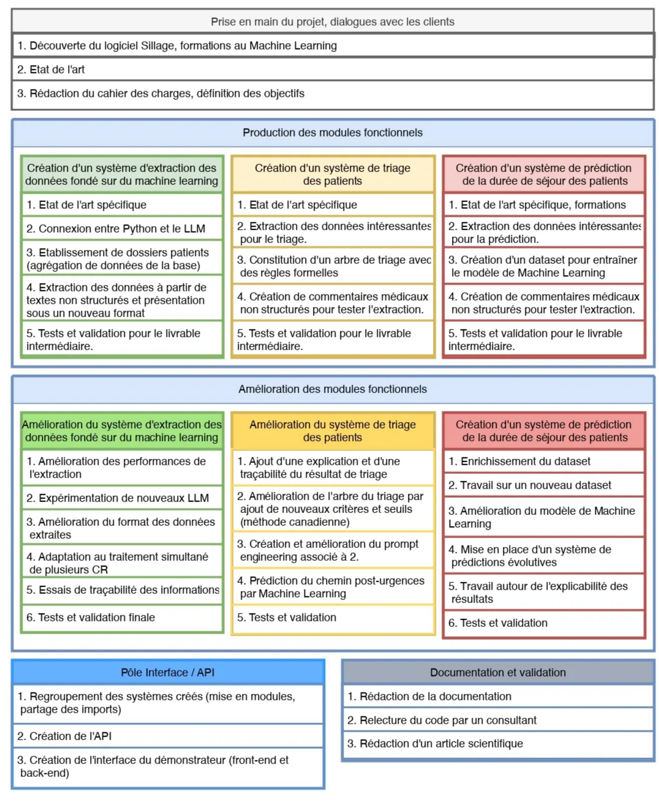
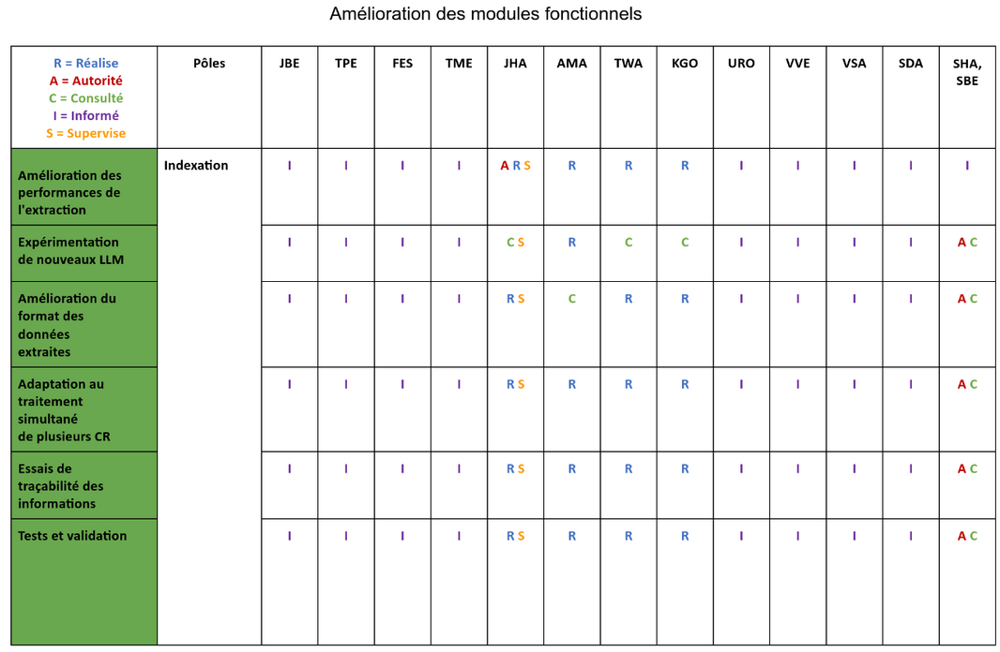
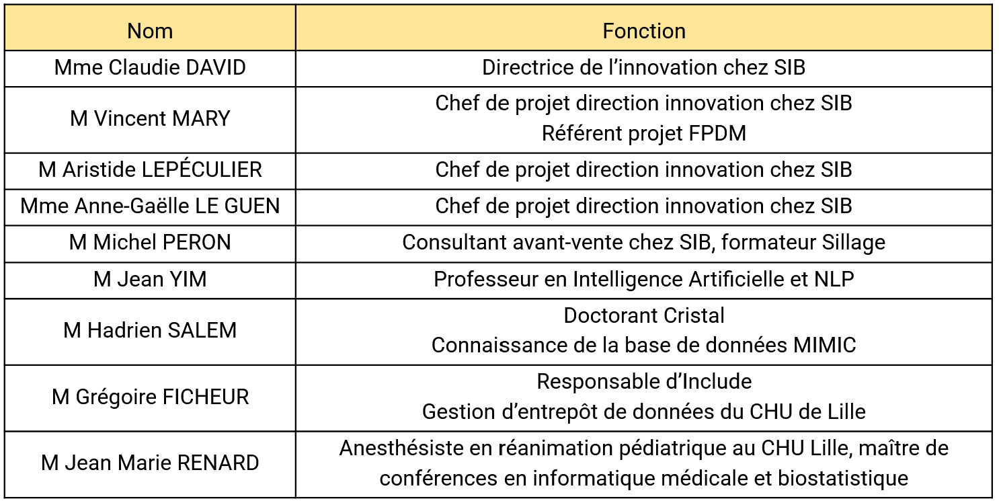
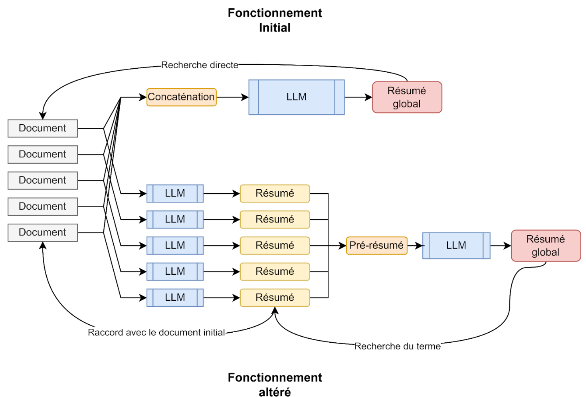
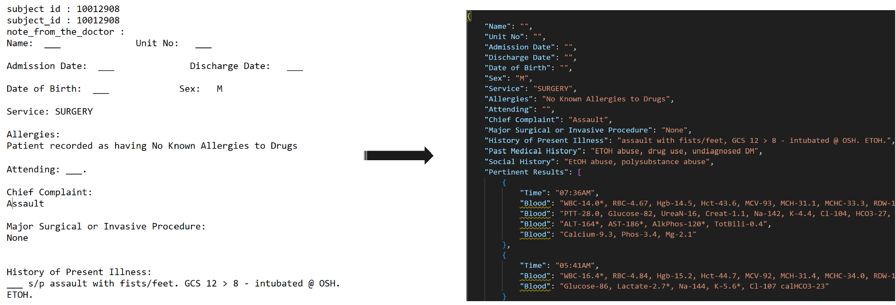
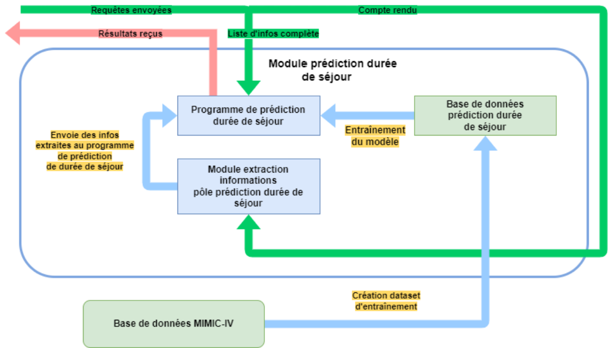

Faire Parler les Données Médicales
Projet mené au sein d’un groupe de 12 personnes
Ce projet est en collaboration avec le Groupement d'Intérêt Public SIB. L'objectif est de concevoir une application permettant d'exploiter les données non structurées des Dossiers Patients Informatisés (DPI), notamment à partir de comptes rendus médicaux, d'ordonnances ou de prescriptions. Ce projet vise à faciliter l’intégration de ces données dans les systèmes hospitaliers pour améliorer la prise de décision en santé.Nous nous appuyons sur des technologies avancées comme l'OCR et le traitement du langage naturel (NLP), en combinant des outils libres et payants, afin de créer une solution optimisée et accessible aux utilisateurs finaux du secteur médical. Le projet inclut également un état de l’art pour identifier les solutions existantes et un démonstrateur technique.
Je suis entouré d’experts dans les domaines de l'IA, du Big Data, et de l'exploitation des données de santé, et nous collaborons avec le laboratoire Cristal ainsi que le SIB. Ce projet innovant est une opportunité majeure pour transformer les données médicales en outils d’aide à la décision clinique.
1. Architecture du Système
Le projet repose sur une architecture modulaire intégrant plusieurs pôles techniques :
- Indexation des dossiers patients : extraction et structuration des informations médicales via un modèle LLM
- Triage des patients : classification en fonction de la criticité, basée sur un modèle XGBoost et des arbres de décision
- Prédiction de la durée de séjour : estimation du temps d’hospitalisation à partir de l’historique médical et des données d’admission
- Interface et API : création d’une API permettant l’interaction avec les modules via une interface utilisateur ergonomique
2. Gestion de Projet
Le projet a suivi une méthodologie rigoureuse avec une planification détaillée et des documents structurants. Les documents qui ont servis de base à cette planification sont le cahier des charges que l’on a rédigé en accord avec le client et le diagramme des exigences fonctionnelles suivant :
{kind=link}

a) Organisation de l’Équipe
L’équipe a été divisée en pôles spécialisés avec des responsabilités claires :
| Pôle | Responsabilités |
| Indexation | Extraction et structuration des données médicales |
| Triage | Développement du modèle de classification |
| Prédiction Durée de Séjour | Implémentation du modèle de prédiction |
| Interface & API | Développement et intégration de l’API |
b) Diagramme de Gantt
Le projet a été structuré en plusieurs phases :
| Phase | Objectifs | Durée |
| S5 | Formation et définition des objectifs | 4 semaines |
| S6 | Développement des modules fonctionnels | 8 semaines |
| S7 | Validation et amélioration des fonctionnalités | 6 semaines |
Cela nous a alors permis de réaliser un diagramme de Gantt sur toute la durée du projet, qui a été modifié au fur et à mesure des avancées et auquel nous nous sommes tenus :
{kind=link}

c) Gestion des Risques
Une analyse SWOT a été réalisée pour identifier les risques et opportunités du projet :
{kind=link}

A cela, nous avons aussi ajouté un plan de gestion des risques qui a lui aussi été modifié au cours de notre travail :
{kind=link}

d) Work Breakdown Structure
Ce découpage des tâches s’est divisé en 2 parties majeures, tout comme notre projet : la première inclut la familiarisation au projet et la création des livrables alors que la deuxième se concentre sur l’amélioration de ces derniers et l’utilisation d’une API.
{kind=link}

e) Matrice RACI
Après avoir fait tout ce travail de préparation et afin de pouvoir commencer la partie technique de ce projet, nous avons rédigé une matrice RACI qui permet de définir le rôle de chaque intervenant dans ce projet :
{kind=link}

f) Formations et consultations
Au cours de ce projet, nous avons eu l’opportunité de travailler avec de nombreux experts dans leurs domaines afin de nous aider à avancer. Nous avons donc recensés tous ceux auxquels nous avons fait appel et noté le total des heures de formations et de consultation que l’on a utilisé. A la fin, nous avions utilisé 14h de consultation interne (avec des personnes qui sont employées par le groupe Centrale Lille) et 23h de consultation externe (avec des représentants du SIB et du personnel médical).
{kind=link}

g) Autres
Nous avons majoritairement utilisé 5 outils pour organiser notre travail :
- Discord : Communication
- Google Drive : Partage de documents, travail collaboratif
- Hugging Face : Hébergeur de modèles LLM et ML utilisés dans différents pôles
- Mimic IV : Base de données médicales présente sur serveur de Cristal
- GitHub : Environnement collaboratif permettant de développer et de gérer les versions
Finalement, pour que notre projet ait un statut clair, nous avons rédigé et signé une convention interne avec le laboratoire Cristal.
3. Livrables techniques
A cause de la confidentialité qui entoure la partie technique de ce projet, je ne peux malheureusement pas partager le code que nous avons rédigé. Je serais donc concis mais la solution mise en place est bien plus complexe que ce que je décris ici.
a) Pôle Indexation
Les fondations de ce travail ont été réalisées en synthétisant des données patients dans un fichier texte à partir de nombreuses jointures sur la table de données MIMIC IV. Ces jointures ont permis de garder seulement les paramètres les plus importants.
Modèle LLM utilisé : OpenHermes 2.5 - Mistral 7B
Objectifs :
- Récupération et concaténation de tout le dossier médical d’un patient
- Synthèse et indexation de ces données
- Travail sur l’explicabilité du résultat
{kind=link}

Résultat : On arrive finalement à indexer les données du patient dans un fichier structuré
{kind=link}

b) Pôle Triage des patients
Afin de décider du résultat du triage, plusieurs données jugées comme ayant une forte influence sur le niveau de priorité du patient sont récupérées :
| Temperature | float |
|---|---|
| FrequenceCardiaque | int |
| FrequenceRespiratoire | int |
| SaturationEnOxygene | float |
| PressionSanguine | string |
| ModeDeTransport | string |
| Age | int |
| Genre | string |
Modèles utilisés : OpenHermes 2.5 - Mistral 7B & XGBoostClassifier
Méthode :
- Arbre de décision structuré pour orienter les patients vers la bonne prise en charge.
- Vectorisation (Machine Learning), calcul de similarité cosine
- Prompt LLM
- Dictionnaire python
c) Pôle Prédiction de la durée de séjour
Objectif :
- Prédire la durée de séjour au moment de l’admission dans un service
- Utile pour les proches et la gestion des lits/personnel
- Basé sur les rapports écrits depuis l’entrée à l’hôpital
Modules :
- Extraction de mots importants avec un LLM
- Prédiction à partir d'exemples pour repérer des tendances grâce aux informations
- Dataset d’entraînement contenant des exemples de données avec les bonnes réponses
Techniques utilisées :
- Encodage One-Hot pour les variables catégorielles
- StandardScaler pour la normalisation des données
- Analyse en Composantes Principales (PCA) pour la réduction de dimension
{kind=link}

d) Pôle API
Technologies utilisées : Flask, FastAPI, Django
Objectifs :
- Permettre aux services hospitaliers d’accéder aux prédictions via une interface intuitive
- Gérer les accès et permissions via une base de données sécurisée

4. Livrables Techniques
- Code source et API documentée : Disponible sur GitHub mais en privé
- Documentation utilisateur et technique : Explication détaillée des modules et guide d’utilisation
- Démonstrations vidéo : Présentation des différentes fonctionnalités implémentées
- Article scientifique : En cours de rédaction
Conclusion
Le projet a permis de développer un outil performant d’exploitation des données médicales, facilitant le triage des patients et la gestion hospitalière. L’intégration d’un modèle LLM et de Machine Learning a permis d’obtenir des résultats optimaux, ouvrant la voie à des améliorations futures comme l’optimisation des modèles ou l’intégration de bases de données françaises.